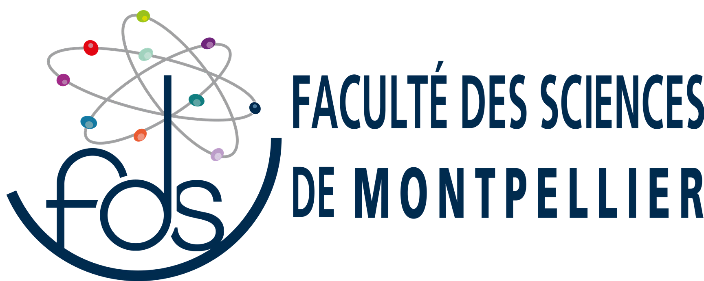
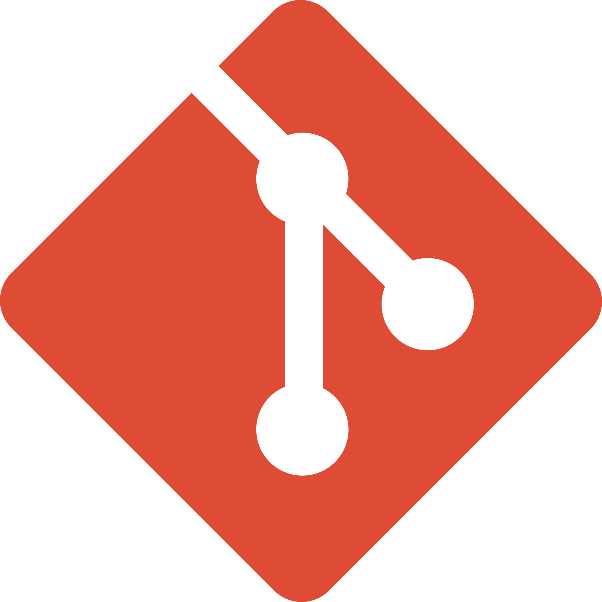
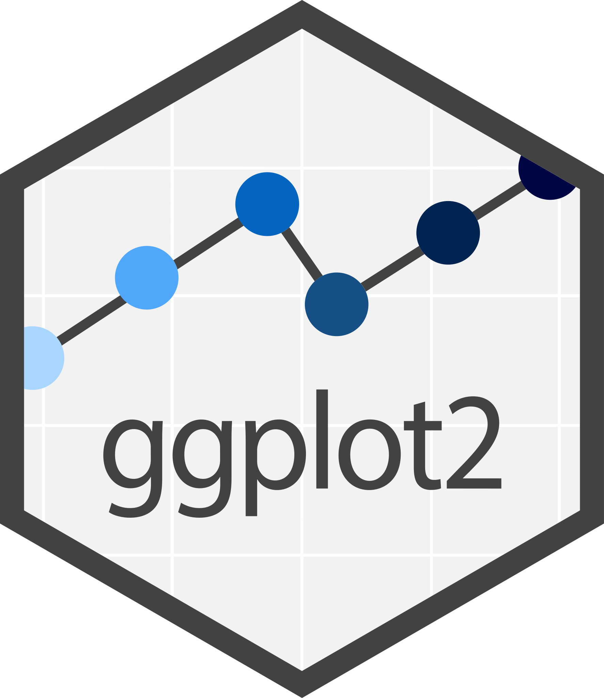
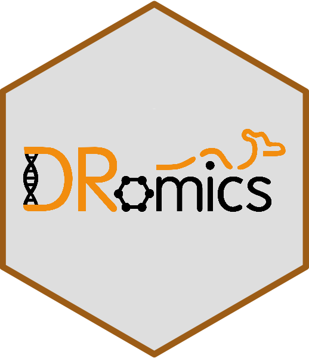
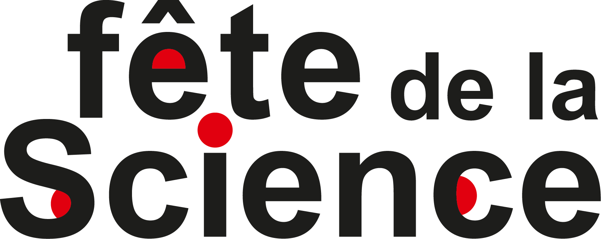
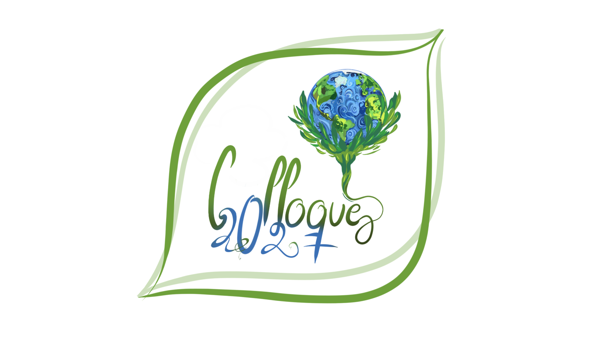

Curriculum Vitæ
Master 2 student in Environment management - Ecotoxicology
Educational background
Master in Environmental Management 2025 — 2027
Université de Lorraine, Metz
- Ecotoxicology | biomodelling | biostatistics | ecosystem functions and biodiversity | trophic chains
- Focus on biomodelling and POPs
Bachelor in Life Sciences 2023 — 2025
Université de Toulouse 30th/133
- Itinerary: Biodiversity and environmental biology (BBE) — Ecology, phylogeny | zoology | parasitology | ecophysiology | animal ecology | behavioural ecology | entomology | genetics
- Ecotoxicology option (14.5/20)
- Quantitative biology (2nd/130)
- Animal biology (18th/185)
- Scientific approach (12th/181)
- Genomics (21st/105)
- Animal developmental biology (31th/196)
- Ethnobotanics (15,25/20)
Bachelor in Life Sciences 2022 — 2023 
Faculté des Sciences de Montpellier
- Itinerary: Environment Sciences — Ecosystems, organisms, molecular biology, cellular biology, chemistry
- Integrated biology of marine mammals (1st/56)
- Biomechanics option (14th/114)
2021-2022 : Baccalaureate 2021 — 2022
- specialty Life & Earth sciences (18/20) & Chemistry & Physics (17/20)
Internships
Master 2 research internship feb — jul 2027
Title: Predicting PFOS contamination in coral reef fish Chrysoptea cyanea using transcriptomic laboratory data via conditional inference tree models.
The internship consists in using oral PFOS contamination transcriptomic response data produced by Emma GAIRIN during her PhD at OIST to predict environmental concentration and effects in C. cyanea, a potentially useful way of reducing costs of biomonitoring
Master 1 research internship may — jun 2026
Title: Critical analysis of environmental indicators used in the computing of E.S.G. scores’ environmental relevance.
As E.S.G. (environmental, social and governance) scores are of growing importance in investment decision making, an assessment of the relevance of the environmental indicators used by three audit agencies was conducted. Ecological and ecotoxicological indicators were studied and showed a lack of correlation between a company’s score and actual environmental risks.
Licence 2 internship may — jun 2024
Creation of scientific workshops and participation in other. About ecology, evolution, functional traits and basic chemistry and physics in the scientific communication association Délires d’encre.
Curriculum projects
- 2nd semester: Bibliographical Synthesis about orcas contamination, particularly with PCB.
- 4th semester: Practical study on micro-forests efficiency (Miyawaki) on restoring biodiversity. Sampling (pitfall traps) and statistical analysis.
- 5th semester:
- Bibliography on PFOA and DuPont de Nemours© scandal about Teflon in West Virginia (USA).
- Epistemologic research about cellular senescence in evolutionary biology
- 6th semester: Risk assessment on glyphosate and AMPA, their toxicity and their environmental fate. A bibliographical analysis.
- 7th semester:
- In class study project on effects of two stress factors, temperature increase and nitrate contamination on Myriophyllym spicatum. Experimenting and statistical analysis.
- Two Bibliographic synthesis: Persistent organic pollutants (POPs) in the grand cycle of water; Bio-based versus traditional plastics: a comparative toxicity and degradability assessment.
- 8th semester: In class study project on PVC rainwater leaching on worm Eisenia fetida at different pH and PVC concentrations. Experimenting and statistical analysis.
Skills
Programming and computing
- Main languages: R (advanced)
 , python (beginner)
, python (beginner) - GIS: Qgis and ArcGIS pro
- Reproducible research: Quarto , R Markdown , Git (Github)

- Documents: HTML, (S)CSS, Markdown, LaTeX (basics)
Data processing
- Main inferential statistical tests
- Dose-response modeling: selection of significantly responsive items, model fitting and selection, ECX% and benchmark doses (BMD) computation.
- Predictive statistics: ANOVA, linear regression, non-linear models, GLM
- Multivariate analysis: trees, PCA, correspondence analysis
- Data representation: R base and ggplot2

Ecotoxicological testing
- Standard tests:
- Daphnia magna (ISO 6341),
- Ames (ISO 16240)
- Germination (ISO 18763)
- Algae Raphidocelis subcapitata (ISO 8692)
- Cellular bioluminescence Vibrio fischeri (ISO 11348)
- Earthworm Eisenia fetida (ISO 17512-1)
- RT-qPCR
- Bradford protein assay
- Bases of transcriptomics and omics in general: theory and data analysis with gene selection, benchmark doses determination and graphical representations.

- Mussel dissection (Dreissena polymorpha)
- Myriophyllum and earthworm cultivation
Ecological testing
- Ecosystem functions testing: assimilative capacity, respiration, primary production and consumption, decomposition.
General Skills
- Scientific protocol thoroughness (multi-stress — complex experimental designs)
- Communication skills
- Meticulous drafting and thoroughly annotated scripts and protocols
- Adaptation and teamwork
Additional
- Image editing: Photoshop, Inkscape, ClipStudio Paint, Krita
Languages
- French — Native 🇫🇷
- English C1 (TOEFL, TOEIC) 🇬🇧
- Japanese (conversational) 🇯🇵
- Spanish 🇪🇸
Science communications
- Fête de la science: Organized a 3 day long event targeted at school children in a scholar context and then a public setting. The event was about explaining key principles of predator-prey dynamics and modeling. – LIEC, Lorraine University, in 2025 and 2026.

This was a fantastic opportunity for me to get immersed again in Lotka-Volterra equations whilst learning to better raise awareness among children
- Organization of a symposium about forests and climate change as part of the communication team, and gave a presentation about forest fire management PFAS foams ecotoxicology – LIEC, Lorraine University, in 2027

- Conducted a month-long scientific communication internship which allowed me to acquire knowledge transmission skills.